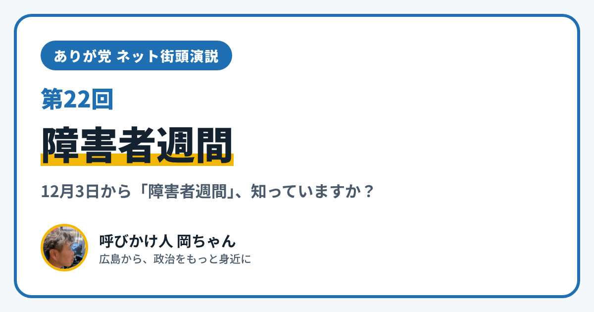

ありが党 ネット街頭演説 第22回｜12月3日から「障害者週間」、知っていますか？

こんにちは、ありが党の呼びかけ人、岡ちゃんです。今日のネット街頭演説のテーマは「障害者週間」です。
「障害者週間」という言葉、聞いたことはありますか？ 毎年12月3日から9日までの1週間は、法律で決められた「障害者週間」です。もうすぐ始まるので、今日はこの1週間を紹介します。
なぜ、12月3日から9日なの？
障害者週間は、「障害者基本法」という法律で決められています。内閣府のページによると、目的は、障害のある人の福祉について、みんなの関心と理解を深めること。そして、障害のある人が、社会や仕事、文化など、あらゆる場面に参加する気持ちを高めることです。
12月3日は、国連が決めた「国際障害者デー」。12月9日は、1975年に国連で「障害者の権利宣言」が採択された日で、日本では「障害者の日」とされてきました。この2つの日をつないだ1週間が、障害者週間です。
今年は、家からも参加できます
内閣府は今年、「障害者週間」オンラインセミナーを開きます。12月3日から25日まで、ネットで配信され、だれでも無料で見られます。視覚障害、聴覚障害、知的障害、発達障害、高次脳機能障害などの当事者団体が、困りごとや、これからの社会について話す予定です。
ほかにも、全国から集まった「心の輪を広げる体験作文」や「障害者週間のポスター」の表彰があります。東京での行事が多いですが、オンラインセミナーなら広島の家からでも見られます。くわしくは、内閣府の「障害者週間」のページで確かめてください。
僕が思うこと
僕は電動車椅子で暮らしています。障害のことは、障害のある人だけの話ではなく、だれもが年をとったり、けがや病気をしたりして、いつか関わるかもしれない、みんなの暮らしの話だと僕は思っています。
この1週間を、身近な人と「暮らしのなかで困っていること」を話してみる、きっかけにできたらいいなと思っています。
あなたの暮らしの中で、「ここが通りにくい」「これがわかりにくい」と感じることはありますか？ あなたの暮らしの声を聞かせてください。InstagramのDM（@ayu19841002）や、ありが党のページからどうぞ。
ありが党は、まだ僕ひとりから始めたばかりです。政治をもっと身近にしたいと思う方、一緒に考えてくれる仲間を探しています。InstagramのDM（@ayu19841002）で気軽に声をかけてください。